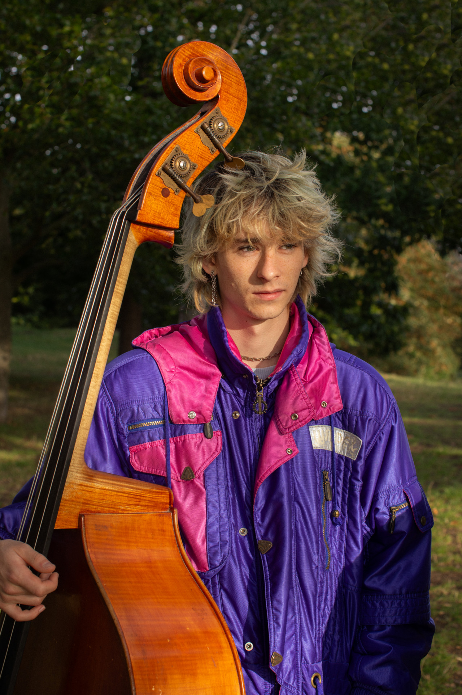
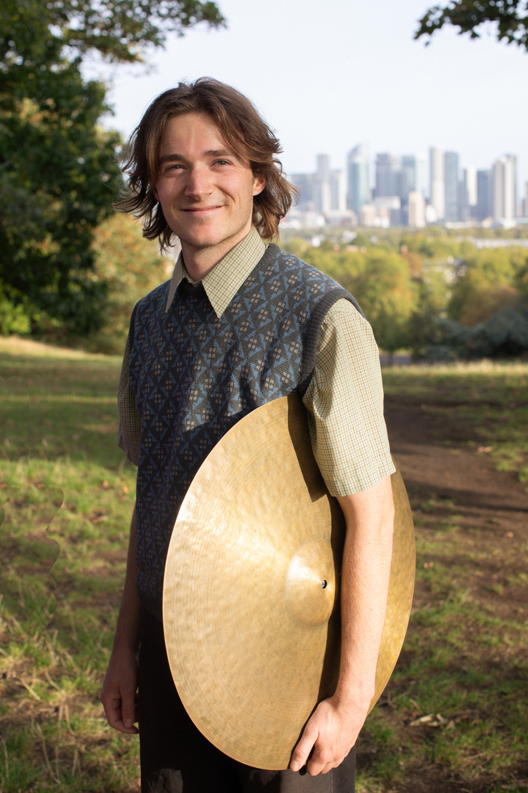

Emerging from the creative London jazz scene, EMRYS are a trio of unique young artists crafting original jazz music. Drawing from a shared love of Jazz, Classical, Choral and Folk music, their immersive compositions inspire flowing musical landscapes inviting reflection and rediscovery.
Individually Sam, Chris and Isaac have worked with renowned Jazz artists such as Byron Wallen, Hans Koller, Tom Challenger, Jon Gordon, Harry Diplock and Laura Jurd. EMRYS sees these three young artists combine, bringing their own music and voices to audiences for the first time.
In spring 2026, EMRYS will embark on a ‘Walking and Music Tour’ of the Lake District. Inspired by Poet Laureate Simon Armitage’s book ‘Walking Home’, the trio will trek across the mountains, valleys and waterways of the Lake District on foot, with each day’s walk leading to a concert in churches, village halls, schools, and community spaces. Recordings from each concert will form a debut album.

